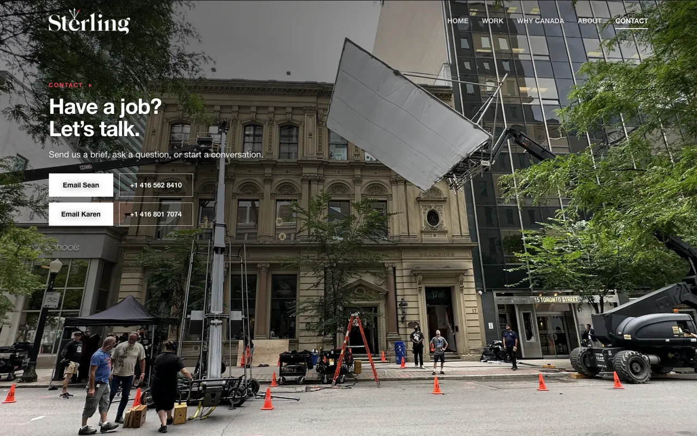
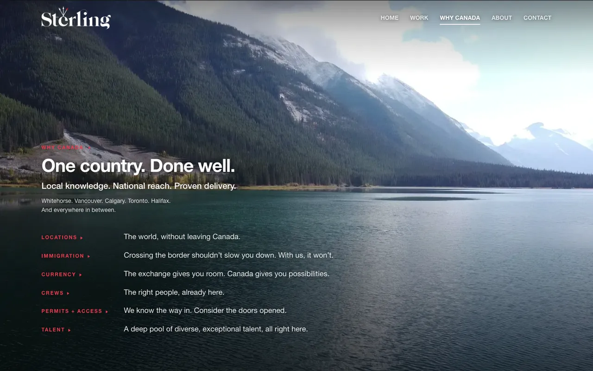

23 October 2026, with your notes of 23 October.
In both versions: the street photo on Contact; the Sterling logo one and a half times larger, its g now complete; the same margin on every screen, so the page frames alike on every computer; six more brands on Work. Why Canada now has a third layout to compare.

Version 1 The cars on the ice on Why Canada, the street on Contact
Version 2 The Rockies on Why Canada and Tofino on Contact, from your opening footageNow moving, in the film on the home page: generated footage made from the two stills you chose. A price follows.